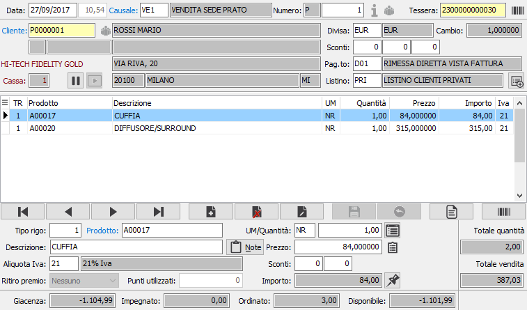
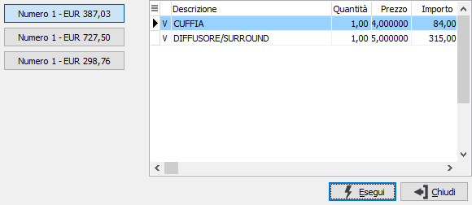
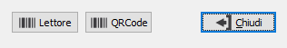
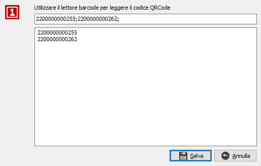

Se attivo il modulo "Gestione CONAI" ed
in base a determinati parametri specifici, è presente il pulsante per
accedere alla Gestione dei dati
Conai.
Se attivo il modulo "Gestione CONAI" ed
in base a determinati parametri specifici, è presente il pulsante per
accedere alla Gestione dei dati
Conai.Righe movimento
In questa finestra video è possibile inserire i vari prodotti. È possibile inserire righe relativi a prodotti, ad omaggi di varia natura e descrittivi.
La maschera video è articolata su due sezioni: la sezione inferiore visualizza il pannello di input mentre la griglia della sezione superiore visualizza le righe inserite.

TIPO RIGO: codice numerico presente sulla tabella dei tipi rigo utilizzato per definire il tipo di rigo che si vuole inserire. Se si desidera evadere gli ordini è possibile richiamare la finestra di selezione degli ordini tramite il tasto F12. Sul campo sono attive le funzioni di ricerca (F9). Se la causale prevede la stampa dello scontrino su di un registratore di cassa è possibile che alcuni tipi rigo non siano utilizzabili, per esempio il reso. Oltre i tipi di rigo prodotto, descrizione, ecc. esistono dei tipi rigo speciali attivabili da configurazione che utilizzano elaborazioni particolari, come il reso o il ritiro premio, oppure che utilizzano prodotti con caratteristiche particolari in anagrafica come il buono sconto.
PRODOTTO: campo alfanumerico per inserire il codice dell’articolo che si intende utilizzare. Il campo è attivo solo per i tipi di rigo che prevedono l'accesso al prodotto. Sul campo sono attive le funzioni di ricerca (F9) ed accesso rapido alla tabella (CTRL+W). Se sul prodotto viene inserito un codice a barre riconosciuto (utilizzando i tipi barcode) i dati successivi possono essere compilati tutti in automatico; è altresì possibile sul campo inserire il barcode della tessera e se il campo in testa è stato lasciato vuoto sarà completato automaticamente e si potrà procedere con l'inserimento di un prodotto effettivo. Esistono un tipo di prodotto che a livello di anagrafica ha specifiche relative alla vendita al dettaglio ed è il prodotto di tipo buono sconto che, se selezionato, attiva il relativo tipo rigo. E' inoltre possibile inserire il codice a barre di uno o più voucher da utilizzare sulla vendita; in questo caso non sarà creato nessun rigo, ma saranno memorizzati i voucher inseriti ed al termina della registrazione sarà richiesta la conferma per l'utilizzo. Tramite il tasto funzione F11 si può accedere alla finestra relativa alla Selezione descrizioni prodotti.
DESCRIZIONE: campo alfanumerico di 60 caratteri per descrivere il prodotto. In caso di articoli codificati, il campo viene compilato automaticamente con la descrizione dell’articolo in esame, che è tuttavia modificabile a cura dell’utente. Nel caso di tipo rigo che identifichi righe descrittive, sul campo è attiva la ricerca sulla tabella dei Testi fissi documenti, che consente di acquisire testi precedentemente inseriti ed assegnati ad un codice.
ALIQUOTA IVA: codice I.V.A. memorizzato sull'articolo. Sul campo sono attive le funzioni di ricerca (F9).
RITIRO PREMIO: campo attivo solo se sono gestite le tessere fedeltà e per tipi rigo che prevedano il ritiro dal catalogo premi. Definisce se il premio viene ritirato utilizzando il punteggio della tessera oppure il punteggio ed un determinato valore.
PUNTI UTILIZZATI: campo attivo solo se sono gestite le tessere fedeltà e per tipi rigo che prevedano il ritiro di un premio dal catalogo premi. Indica i unti utilizzati per ritirare il premio e da scalare dalla tessera.
UNITÀ DI MISURA: campo alfanumerico di 3 caratteri, presente nella tabella Unità di misura, per descrivere l’unità di misura del prodotto. L’unità di misura può essere modificata dall’utente, ma per gli articoli codificati vengono accettati solo i codici delle unità di misura presenti in anagrafica articolo. Sul campo sono attive le funzioni di ricerca (F9). Tramite il tasto funzione F11 si può accedere alla finestra relativa al fattore di conversione.
QUANTITÀ: campo numerico per inserire la quantità per l'articolo attivo. Il campo può essere completato in automatico tramite il valore presente sulla causale di vendita.
PREZZO: campo numerico per inserire il prezzo. Per gli articoli codificati viene presentato, nell’ordine, il prezzo dell'eventuale contratto associato al cliente o all'attività, oppure il prezzo presente nell'eventuale listino speciale, oppure il prezzo del listino prodotti memorizzato sul movimento, oppure il prezzo di vendita presente in anagrafica articolo. Il prezzo proposto può essere modificato dall’utente.
SCONTI O MAGGIORAZIONI: campi, abilitati o meno in relazione al numero sconti previsto in configurazione, per inserire una percentuale di sconto o maggiorazione. Se esistenti, vengono proposte le percentuali di sconto esistenti in anagrafica clienti, in anagrafica articoli o in listini clienti. A conferma dell’ultimo sconto, viene visualizzato l’importo netto di rigo.

Tramite i pulsanti posti in alto sopra le righe è possibile sospendere movimenti e riprenderli successivamente. E' possibile sospendere un movimento se ha almeno una riga valida inserita: il movimento viene sospeso e la procedura si comporta come se fosse stato effettuato il salvataggio riportandosi in modalità inserimento con un nuovo numero di registrazione, il pulsante Riprendi viene attivato. E' possibile riprendere un movimento solo se non sono state inserite altre righe: se è presente un solo movimento sospeso questo viene ripreso automaticamente, altrimenti compare la finestra di Selezione scontrino sospeso da cui è possibile selezionare il movimento da riprendere; la procedura recupera tutti i dati di testa del movimento sospeso compreso il numero di registrazione, inserisce tutte le righe ed attende altri inserimenti di righe o la chiusura. La sospensione del movimento può essere configurata anche per addetto, tramite la procedura di configurazione, in questo caso nella finestra di selezione scontrini sospesi non sarà visibile la sigla dell'utente sul pulsante del movimento ed ogni addetto vedrà e potrà riprendere solo movimenti sospesi da lui. La finestra di selezione scontrini sospesi mostra sulla sinistra tanti pulsanti quanti sono i movimenti sospesi, riportando numero ed importo totale; come detto in precedenza può essere presente la sigla dell'addetto oppure no; la parte di destra mostra le righe relative al pulsante del movimento sospeso che viene premuto. La pressione sul pulsante Esegui effettua la ripresa del movimento selezionato tramite il relativo pulsante.I movimenti sospesi rimangono memorizzati fino a quando non si esce dalla procedura dei movimenti di vendita; nel caso siano presenti movimenti sospesi e si richieda l'uscita dalla procedura viene inviato un messaggio all'utente relativo alla presenza di movimenti sospesi e richiesta ulteriore conferma per l'uscita; all'uscita della procedura tutti i movimenti ancora sospesi andranno perduti.
Nella finestra video è possibile scorrere le righe del movimento, visualizzando quello attivo nel pannello di input, tramite i tasti CTRL+freccia giù e CTRL+freccia su. Un rigo di movimento visualizzato nel pannello di input può essere eliminato, ancorchè privo di trattamenti successivi, premendo il bottone Elimina della barra strumenti del pannello di input; è possibile inserire un rigo vuoto immediatamente successivo al rigo attivo premendo il bottone Nuovo della barra strumenti del pannello di input.
Tramite il pulsante Ordini è possibile richiamare la finestra di evasione ordini.

Tramite il pulsante Barcode, se presente ad attivo il relativo modulo è possibile inserire nel documento dati provenienti da lettori ottici. Se è attiva la gestione delle tipologie di barcode si apre una finestra da cui è possibile selezionare quale tipo di inserimento barcode di desidera utilizzare; selezionando Lettore si accede alla funzionalità di inserimento nel documento di dati provenienti da lettori ottici, se si seleziona QRCode si accede alla seguente finestra:
Da questa finestra è possibile leggere un QRCode che contenga al suo interno vari Barcode, che devono essere gestiti tramite le codifiche dei prodotti o le tipologie barcode, separati da una carattere specifico che può essere configurato nel file SepBarcodeBilancia.ini presente nella cartella Modelli\CRF o Custom\CRF dell'installazione di OS1. Premendo sul pulsante Salva saranno generate nel documento le righe relative ai barcode elencati.
Se attivo il modulo "Gestione CONAI" ed
in base a determinati parametri specifici, è presente il pulsante per
accedere alla Gestione dei dati
Conai.

 Se attiva la gestione dei listini di rigo,
configurabile tramite l’omonimo parametro in configurazione “Standard
- ciclo attivo”, è presente, accanto al campo prezzo, il pulsante mostrato
a sinistra che può essere utilizzato per riassegnare il listino al rigo
corrente; si apre la finestra mostrata a destra dove indicare il nuovo
codice listino; sul campo è attivo lo zoom (F9) che visualizza tutti i
listini di tipo prezzi e il tasto funzione F11 che visualizza solo i listini
validi per il prodotto; la pressione del pulsante Salva comporta la riassegnazione
del prezzo e relativo ricalcolo degli importi del rigo. Il codice del
listino è sempre presente sul rigo del documento, se non è gestito il
listino di rigo viene assegnato comunque uguale al listino di testa al
salvataggio finale del documento. In fase di evasione documento il codice
listino, come il prezzo, viene preso dal documento di origine.
Se attiva la gestione dei listini di rigo,
configurabile tramite l’omonimo parametro in configurazione “Standard
- ciclo attivo”, è presente, accanto al campo prezzo, il pulsante mostrato
a sinistra che può essere utilizzato per riassegnare il listino al rigo
corrente; si apre la finestra mostrata a destra dove indicare il nuovo
codice listino; sul campo è attivo lo zoom (F9) che visualizza tutti i
listini di tipo prezzi e il tasto funzione F11 che visualizza solo i listini
validi per il prodotto; la pressione del pulsante Salva comporta la riassegnazione
del prezzo e relativo ricalcolo degli importi del rigo. Il codice del
listino è sempre presente sul rigo del documento, se non è gestito il
listino di rigo viene assegnato comunque uguale al listino di testa al
salvataggio finale del documento. In fase di evasione documento il codice
listino, come il prezzo, viene preso dal documento di origine.

 Se
attiva la gestione delle provvigioni, è presente il pulsante a destra
dell'importo, che in base al tipo di gestione accede agli agenti ed alle
percentuali di provvigione; il codice dell'agente addetto viene sempre
visualizzato ma non è mai modificabile e la percentuale non è mai visualizzata;
è presente un controllo sui movimenti di vendita per cui se l'agente dell'addetto
è uguale all'agente 1 o 2 viene tolto e viene mandato un messaggio, ma
si potrà continuare a registrare il movimento che sarà senza agente addetto.
Se
attiva la gestione delle provvigioni, è presente il pulsante a destra
dell'importo, che in base al tipo di gestione accede agli agenti ed alle
percentuali di provvigione; il codice dell'agente addetto viene sempre
visualizzato ma non è mai modificabile e la percentuale non è mai visualizzata;
è presente un controllo sui movimenti di vendita per cui se l'agente dell'addetto
è uguale all'agente 1 o 2 viene tolto e viene mandato un messaggio, ma
si potrà continuare a registrare il movimento che sarà senza agente addetto.
|
Se attiva la gestione matricole sarà possibile accedere dal singolo rigo/dettaglio alla finestra delle matricole tramite il pulsante sul rigo o tramite il pulsante Matricole in alto con cui si accede alla finestra di gestione massiva. |